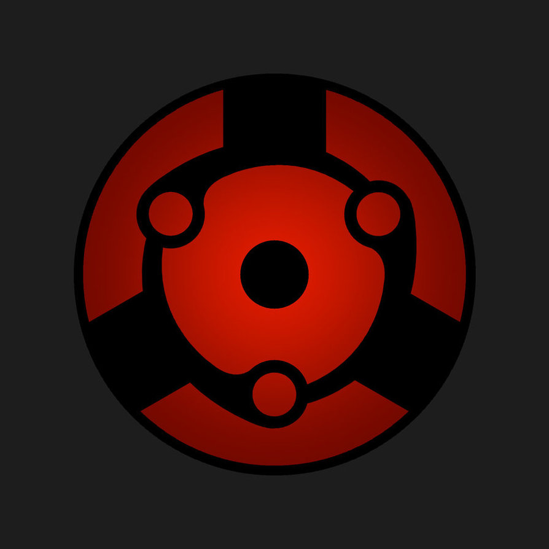

Use HTML tags to add a profile photo of yourself.
Objective/Summary Statement:
Full Stack Web Developer fir hire
As a passionate and dedicated Full Stack Web Developer, I bring a strong background in both front-end and back-end development, with hands-on experience in building responsive, user-friendly websites and applications. Skilled in technologies such as HTML, CSS, JavaScript, Node.js, React, and PostgreSQL, I am eager to solve complex problems and create dynamic web solutions. I am committed to continuous learning and strive to stay at the forefront of web development trends, ensuring that I deliver modern, efficient, and high-quality results for my clients and team.
Education
https://www.udemy.com/course/the-complete-web-development-bootcamp/?couponCode=ST11MT170325G3
- Full-Stack Web Development Bootcamp - Udemy - 2025, (Instructor: Dr. Angela Yu)
Work experience (list job titles, employers, dates, and responsibilities): NONE
Skills
Languages
- HTML
- CSS
- Javascript
- Node
- React
- PostgreSQL
- Web3
- DApps
List any relevant awards, certifications, or other accomplishments
Projects
- Portfolio Website
- Top 3 Movie list
- Birthday Card
To Do:
- Add website to your GitHubo.
- Share website (in the Q&A) with other students.
- Comment and make suggestions to other students' projects.